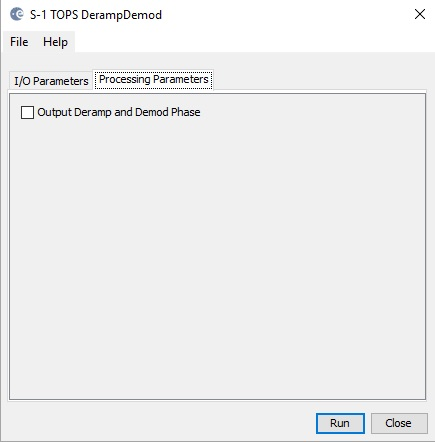

| Deramp Demodulation |
|
Deramp and demodulation is a key step in the processing of TOPS data. The application of deramping brings the Doppler spectrum of one burst to baseband. Then the DC component in the spectrum can be removed with the help of demodulation. Without applying these operations, artefacts will be introduced in operations such as interpolation or azimuth filtering. In practice, the deramp and demodulation can be combined in one processing step. This operator performs the deramp and demodulation to the S-1 SLC split product.
